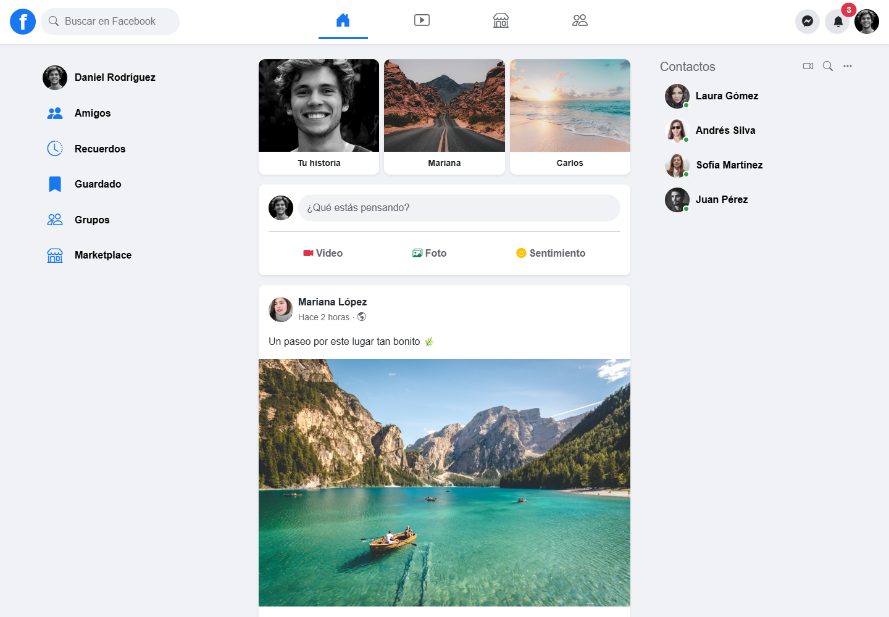
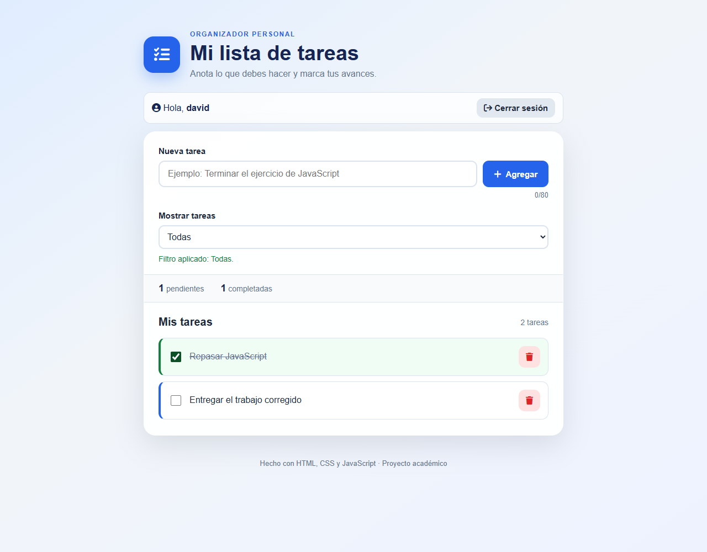
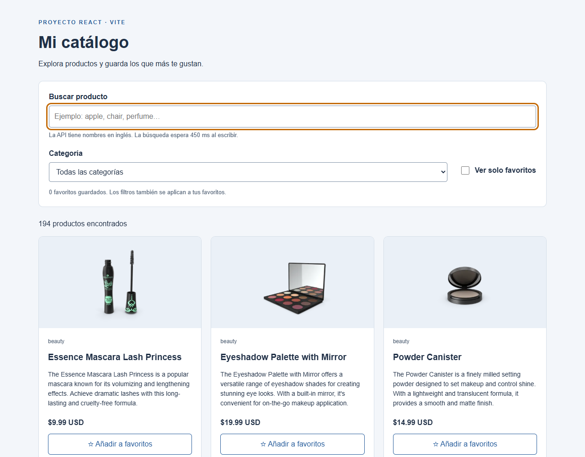
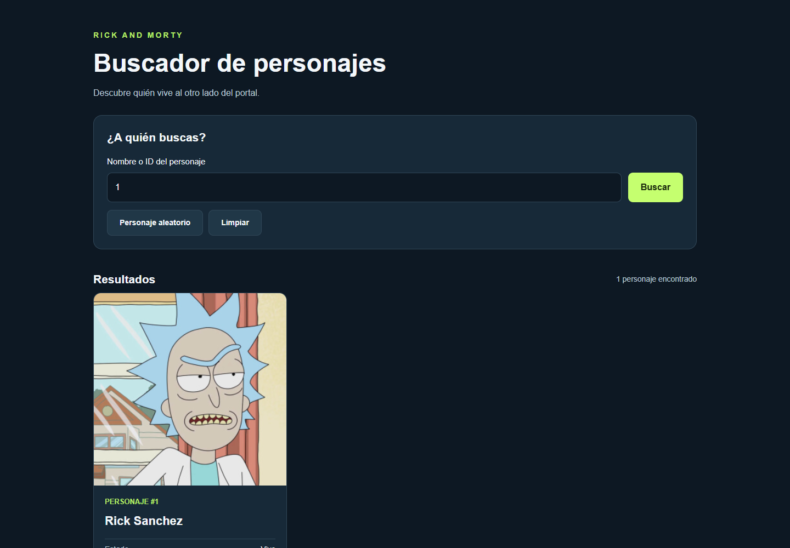

HTML
Estructura semántica, secciones y formularios.
PORTAFOLIO ACADÉMICO · DESARROLLO WEB
Estudiante, curioso y siempre aprendiendo.
Transformo lo que aprendo en páginas que se pueden explorar. Estos son mis primeros pasos con HTML, CSS, JavaScript y React.
Ideas sencillas. Código claro. Aprendizaje constante.
const david = {
rol: "Estudiante",
enfoque: "Desarrollo web",
herramientas: [
"HTML", "CSS",
"JavaScript", "React"
],
aprendiendo: true
};
Estudiante de desarrollo web
SOBRE MÍ
Soy David, estudiante de desarrollo web. Este portafolio reúne los trabajos que he realizado durante el curso y las herramientas que estoy aprendiendo a utilizar.
Me interesa entender cómo funcionan las interfaces, escribir código más organizado y construir páginas que sean cómodas de usar tanto en computador como en celular.
Mi objetivo es sencillo: practicar, resolver problemas y seguir creciendo.
MIS HERRAMIENTAS
Cada tecnología tiene un lugar en mis proyectos.
Estructura semántica, secciones y formularios.
Estilos, distribución y adaptación a pantallas.
Eventos, DOM y almacenamiento en el navegador.
Componentes, estado, hooks y consumo de API.
Wireframes y planificación visual de una página.
DEL EJERCICIO A LA PANTALLA
Trabajos del curso, con sus aprendizajes y resultados.

Maquetación inspirada en Facebook, con navegación, publicaciones y columnas de contenido.
Aprendí: distribución de elementos y estilos de una interfaz.
Ver Facebook
Lista de tareas con registro de usuarios, filtros y datos guardados por cuenta en el navegador.
Aprendí: eventos, manejo del DOM y Web Storage.
Probar ToDoList
Catálogo con búsqueda, categorías y favoritos. Incluye como ejercicio adicional un juego para medir la reacción.
Aprendí: componentes, hooks, peticiones y persistencia.

Busca personajes de Rick and Morty por nombre o ID, consulta sus datos y explora los resultados por páginas.
Aprendí: peticiones con fetch, manejo de errores y presentación dinámica de datos.
Buscar personajesSIGAMOS EN CONTACTO
Puedes escribirme sobre mis proyectos o mi proceso de aprendizaje.
david.bustamante251@tau.usbmed.edu.co